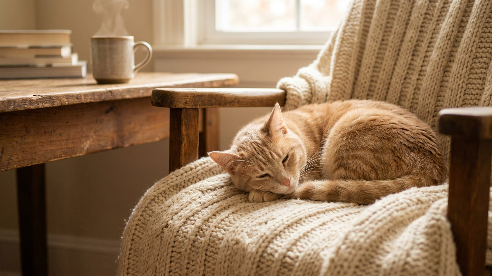

Стоит зайти на кухню — и кошка уже вьётся у ног, мяукает и смотрит на миску. Миска при этом полна. Это не голод — у большинства домашних кошек за попрошайничеством стоит одна из пяти чётких причин, и каждую можно перенаправить. Ниже разбираем, что происходит, и что работает.
🐾 Не уверены, что рацион подходит?
Напишите в AnimaLife, чем кормите, — приложение покажет, чего не хватает, и рассчитает порцию под вес, возраст и активность. Бесплатно.
Проверить рацион → Проверить в MAX →
У вас iPhone? AnimaLife есть в App Store
1. Скука и нехватка стимуляции. Еда — самое доступное событие в жизни домашней кошки. Если день пустой, кошка начинает «создавать события» у миски. Особенно часто это у кошек без игрушек, без активного взаимодействия с хозяином и без доступа к окну.
2. Сбитый режим кормления. Кошки — жёсткие «часовщики». Если сегодня покормили в 8:00, завтра в 9:00, потом раньше — кошка начинает напоминать о себе постоянно, потому что не понимает, когда ждать еду.
3. Привычка выпрашивания подкреплена хозяином. Один раз дали кусочек, когда попросила — кошка запомнила формулу: мяукаю → получаю. Потом хозяин перестаёт давать, но кошка продолжает пробовать, потому что «раньше работало».
4. Слишком редкие кормления. Одна большая порция раз в день — не лучший вариант для кошки. Желудок кошки небольшой, и дробное питание (2–3 раза в день) даёт более ровное ощущение сытости, чем один приём пищи.
5. Конкуренция за миску в многокошачьем доме. Даже если миска одна на двоих и еды физически хватает, более робкая кошка может есть меньше, пока доминантная рядом. Тогда попрошайничество — это сигнал, что одна из кошек не наедается.
Настоящий голод — кошка ест быстро и с аппетитом, когда дают порцию. Требование внимания — понюхала, отошла, через пять минут снова мяукает. Ещё один маркер: если кошка переключается на игру, когда вы уделяете ей внимание, — скорее всего, ей нужны не калории, а общение.
Если кошка внезапно начала есть заметно больше, при этом худеет или наоборот быстро набирает вес — это не поведенческая привычка. Резкое изменение аппетита в любую сторону лучше обсудить с ветеринаром: он проверит, всё ли в порядке с обменом веществ. Не ждите, пока станет очевидно.
🐾 Соберите рацион под свою кошку
AnimaLife учитывает породу, возраст, вес и образ жизни и подсказывает, сколько и чем кормить. Плюс напоминания о кормлении и контроль веса.
Собрать рацион → Собрать в MAX →
У вас iPhone? AnimaLife есть в App Store
🐾 Понравился разбор?
Подпишитесь на канал — каждый день разбираем по одному тревожному симптому у кошек и собак: что в пределах нормы, а когда пора к врачу. Подпишитесь, чтобы не пропустить разбор, который может спасти здоровье вашего питомца.
Материал носит информационный характер и не заменяет очную консультацию ветеринара.